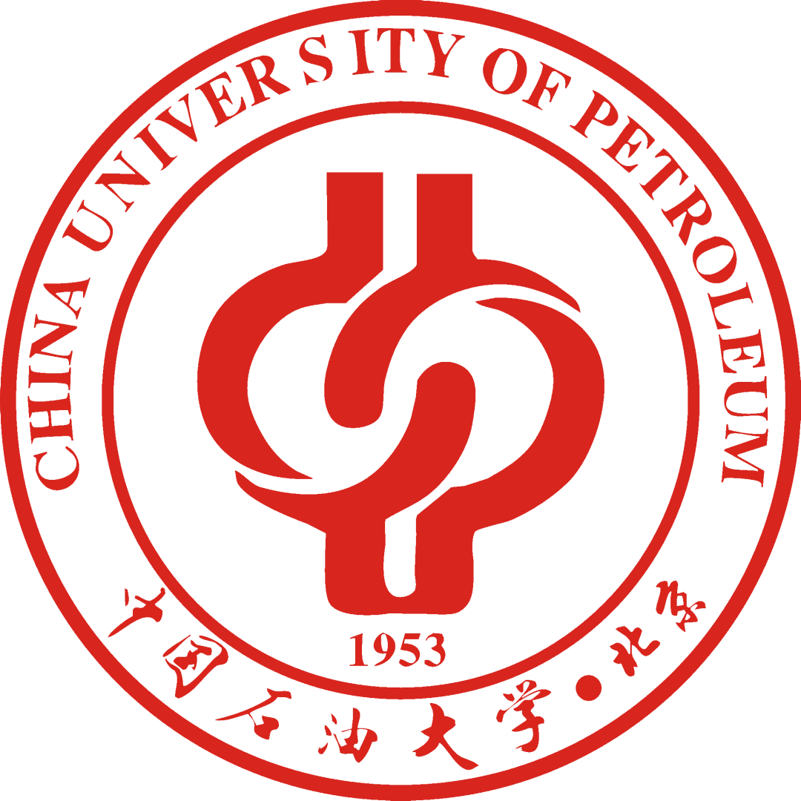

刘洋洋 (Yangyang Liu)
 |
硕士研究生,中共党员 |
关于我
我现在是一名硕士二年级的学生(将于2023年6月毕业), 就读于中国石油大学（北京） 信息科学与工程学院。 在此之前, 我于2020年6月在 中国石油大学（北京） 软件工程专业获得了学士学位, 专业排名:(2/60)。
我的研究兴趣主要包括: 计算机视觉, 图神经网络, 机器学习, 对比学习，强化学习等。
教育经历
|  | 硕士 中国石油大学（北京） (2020.9 ~ 2023.6)
|
本科 中国石油大学 (2016.9 ~ 2020.6)
|
学术论文
Yangyang Liu，Jian-wei Liu. An attempt to apply the homotopy method to the domain of machine learning. Expert Systems with Applications (Q1(SCI) (manuscripts)).
Yangyang Liu，Jian-wei Liu. The Time-sequence Prediction via Temporal and Contextual Contrastive Representation Learning. 19th Pacific Rim International Conference on Artificial Intelligence (PRICAI 2022).
Jianchun Jiang, Xuhui Zhan, Yang-yang Liu, Chong Tang, Jia-nan Wang, Jian-wei Liu. Quality Analysis of high-density polyethylene based on Intelligent. The 4th International Conference on Industrial Artificial Intelligence (IAI 2022).
Yangyang Liu，Yi Cao, Shoubin Li. ES-LDGOP: A robust Image Texture Descriptor Based on Local Binary Pattern (In preparation)
发明专利
基于深度学习的聚乙烯颗粒缺陷检测与识别系统与方法. 2021.CN112837311.国家发明专利
基于自学习模式的综丝分离检测系统与方法.2020.CN110865084A.国家发明专利
采用高速视频采集与处理电路结构.2022. CN216249232U.国家发明专利
基于自学习模型的综丝分离检测系统与方法.2020. CN110865084AU.国家发明专利
一种自动化机械化纱线异常检测与控制方法.2022. CN114120183A.国家发明专利
其他项目
1/6/2021-1/10/2022，石化科技文献关键信息自动抽取模型研究，算法工程师，中国科学院软件研究所互联网软件技术实验室横向项目
1/3/2021-1/6/2021，知识抽取模型，中国科学院软件研究所互联网软件技术实验室横向项目成员
2018 / 5 - 2019 / 5，智能电子门禁，项目负责人，中国石油大学(北京)大学生科技创新项目
其他技能
计算机相关基础知识，熟练掌握python语言、Linux系统操作等
统计学相关基础知识，学习过“随机过程”、“概率论”等统计学课程并获得较好成绩等